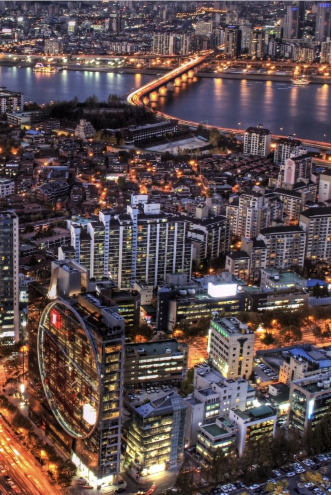

Let's go to South Korea
Why go here?
Due to South Korea being a peninsula, the country offers miles and miles of beautiful coast and stunning beaches. Korea also has a lot of beautiful islands, the most popular and largest one being Jeju Island.

Some of the reasons to visit
- Food
- The culture and history
- Technological Advancement
- Jeju Island
- Public Transportation
- K-POP & K-Dramas
My Favorite City: Seoul
Seoul is the most fantastic destination, offering everything from incredible food, fascinating ancient culture, modern art, fashion and technology, as well as the friendliest people who want you to love their city and country.
Place I want to visit
flights to SeoulMy Favorite Activities
- Go to the top of the N Seoul Tower: Adorning the cityscape of Seoul’s modern city is the N Seoul Tower, reaching an incredible height of 236 meters tall. The height combined with striking modern features marks the N Seoul Tower the second highest point in the city, located in the heart of Seoul.
- Cheonggyecheon Stream: The Cheonggyecheon Stream is an ecological park and walkway that has replaced a historic, pre-existing stream from the Joseon Dynasty.